WaveDirector Pro in the editor and in play — the timeline, the budgets, the live state, and the First Night sample, frame by frame.
The frames below are the marketing showcase set for WaveDirector Pro: real captures from the shipped First Night sample and the editor windows, with plain-word plates stating what each frame shows. Every frame is 2400×1600.
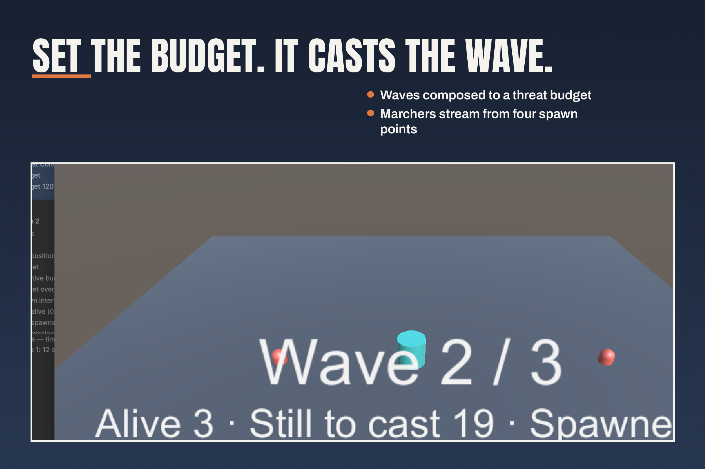
Set the budget. It casts the wave. Wave 2 of 3 running: 3 alive, 19 still to cast.
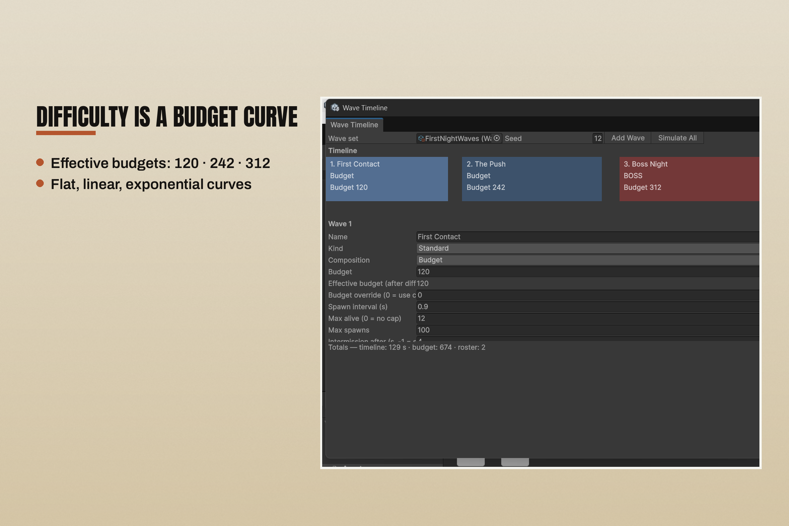
Difficulty is a budget curve. Three wave blocks — 120, 242, 312 — over a 129-second timeline with a total budget of 674.
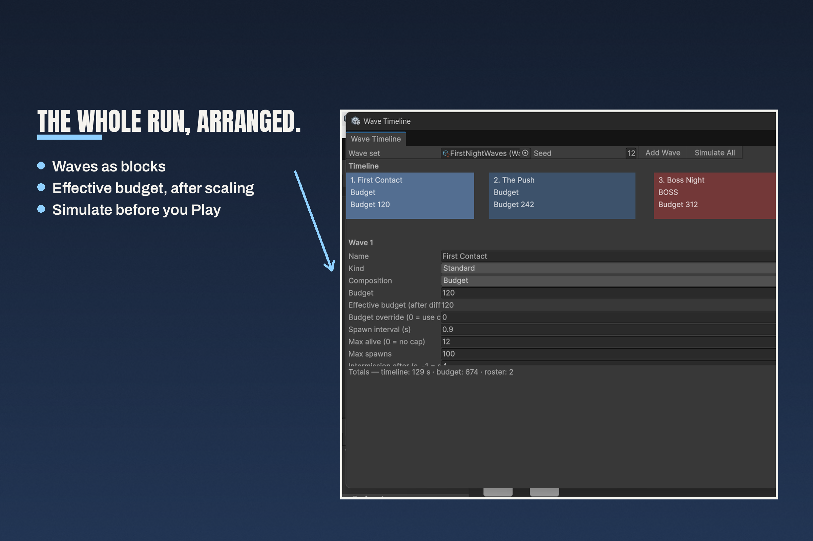
The whole run, arranged. Every wave as a block on one timeline, First Contact first at budget 120.
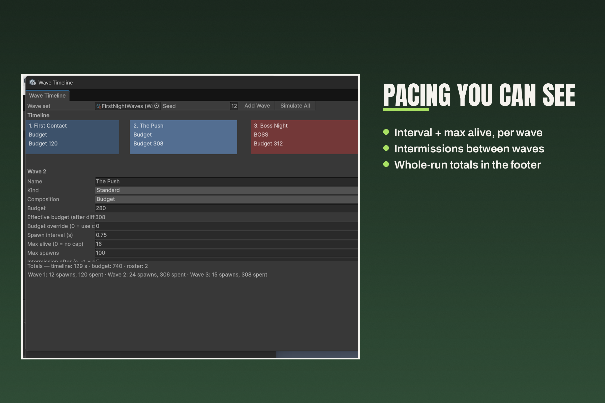
Pacing you can see. Wave 2 edited — budget 280, effective 308 — and simulated: 24 spawns, 306 spent.
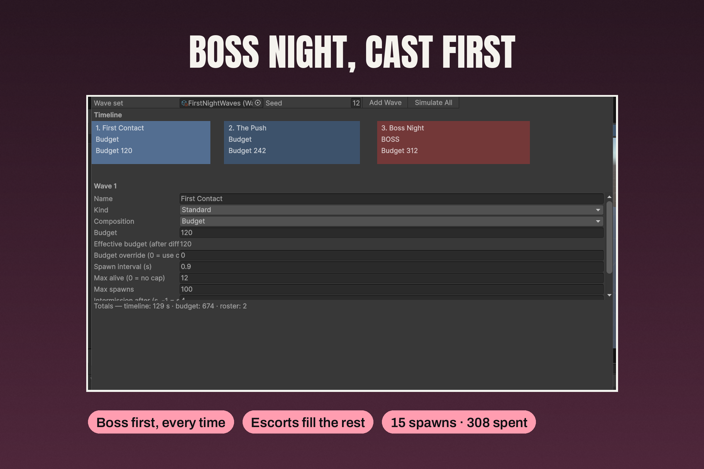
Boss Night, cast first. The boss leads every time and escorts fill the rest: 15 spawns, 308 spent.
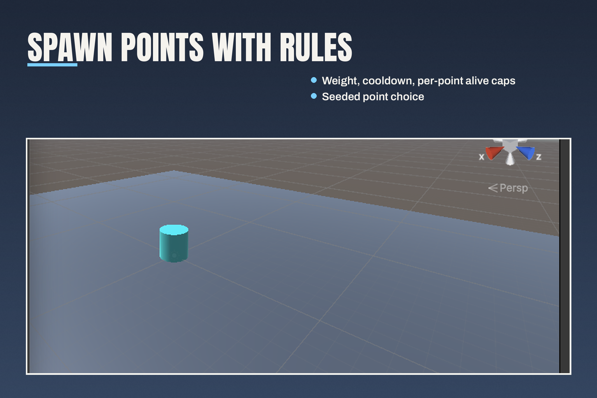
Spawn points with rules. Weight, cooldown and per-point alive caps, with seeded point choice.
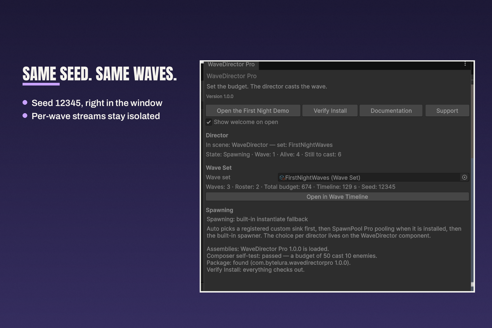
Same seed. Same waves. 3 waves, roster of 2, total budget 674, timeline 129 seconds, seed 12345.
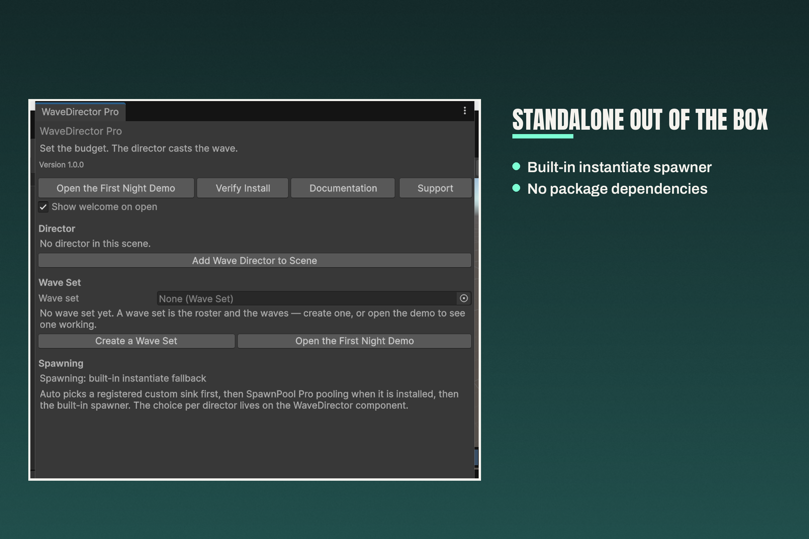
Standalone out of the box. No director in the scene, no wave set yet — the built-in spawner is the fallback, pooling is an optional bridge.
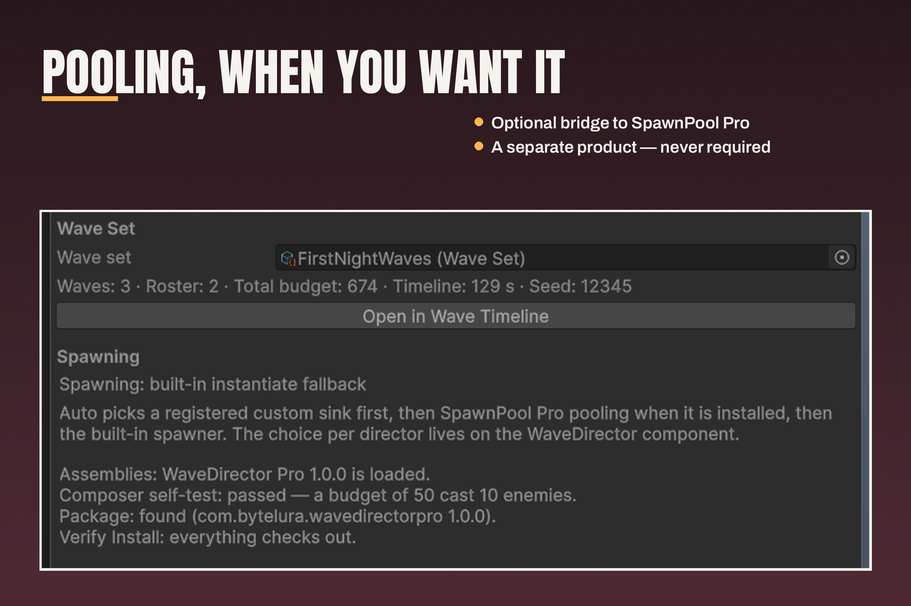
Pooling, when you want it. Package found (WaveDirector Pro 1.0.0) and Verify Install passed — the choice per director lives on the component.
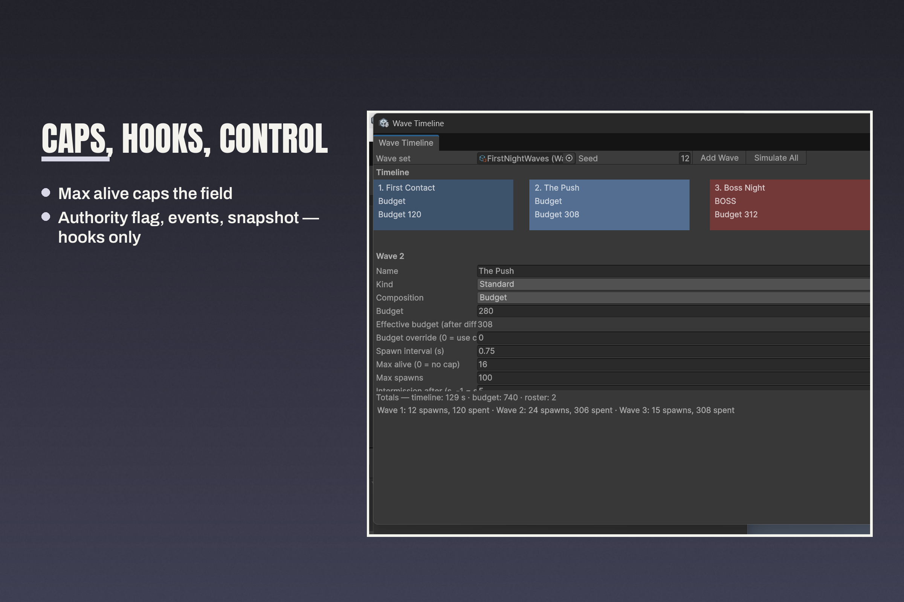
Caps, hooks, control. Max alive 16 on the edited wave, with the authority flag, events and a wave snapshot for your own systems.
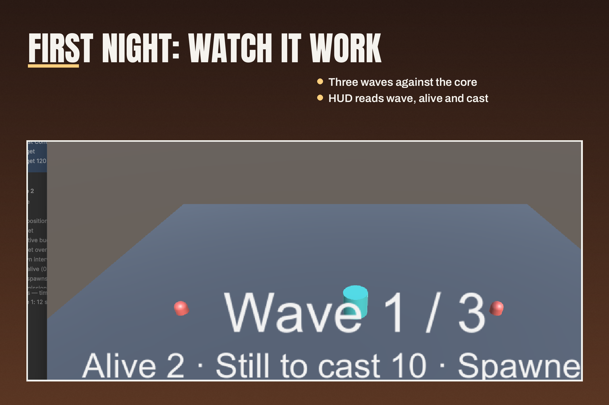
First Night: watch it work. Wave 1 of 3 running: 2 alive, 10 still to cast — the HUD reads wave, alive and cast.
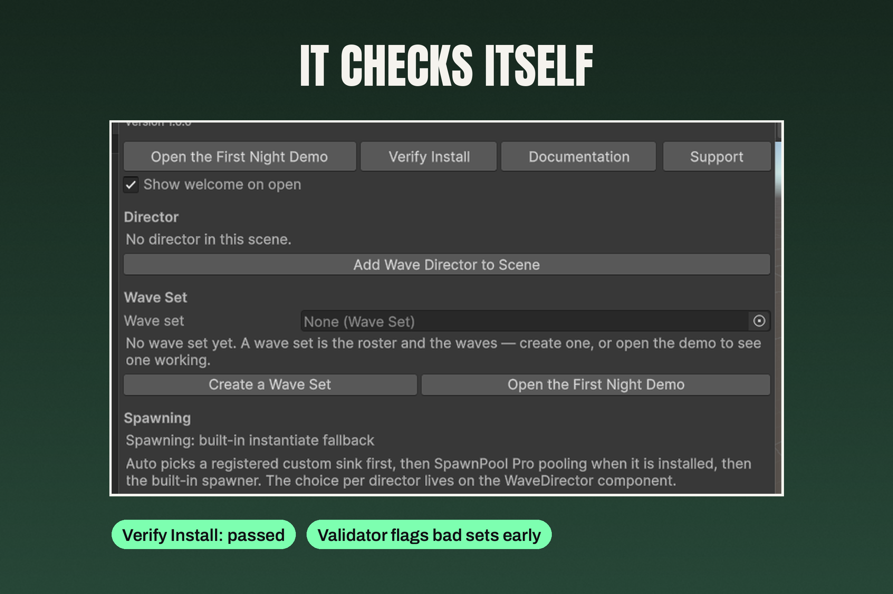
It checks itself. Verify Install: passed — and the validator flags bad sets early, before they reach play.
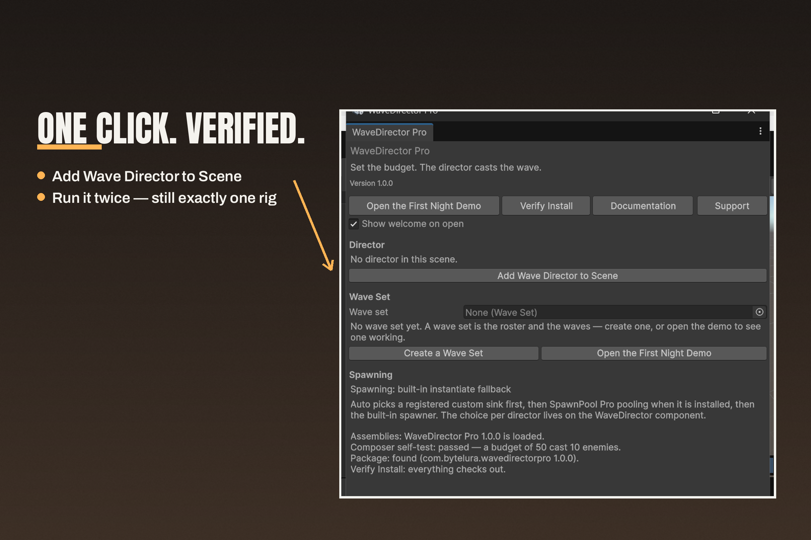
One click. Verified. Add Wave Director to Scene, then run it twice — still exactly one rig.
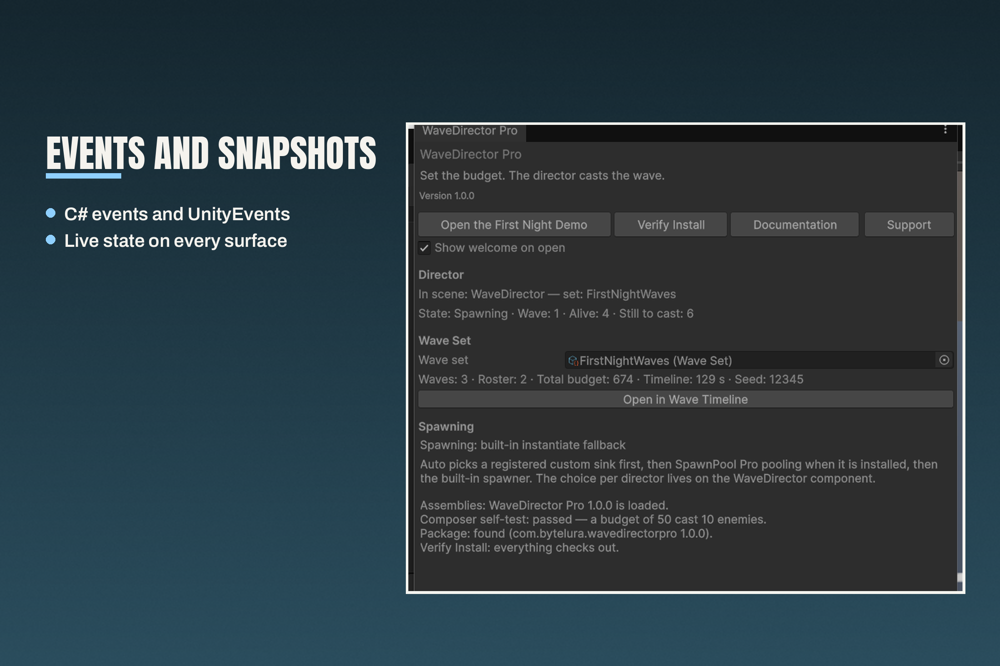
Events and snapshots. Live state on every surface — Spawning, Wave 1, 4 alive, 6 still to cast — with C# events and UnityEvents.
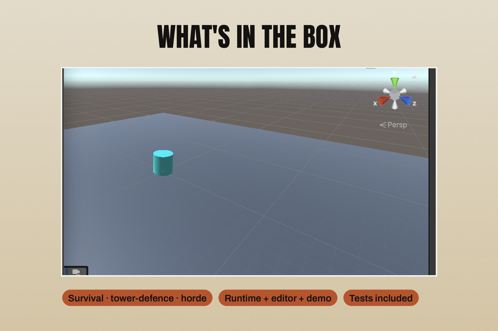
What’s in the box. Survival, tower-defence, horde — runtime, editor and demo, with tests included.
Support: bytelura@gmail.com. When you write, include your Unity version, the wave set and seed involved, and the exact warning text — with a set and a seed, the cast you saw is the cast that can be reproduced.